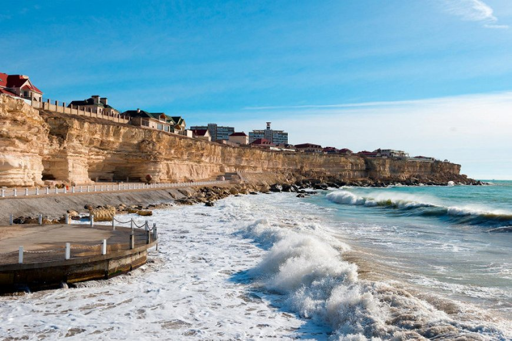

Галерея
Фотографии, отражающие природную красоту и то что от нее осталось.


Каспийское море — это бессточный водоём, расположенный между Европой и Азией, окружённый пятью странами: Россией, Казахстаном, Туркменистаном, Ираном и Азербайджаном. Оно имеет солоноватую воду и сочетает в себе черты как моря, так и озера, играя важную роль в экосистеме региона и в экономике прибрежных государств.
Фотографии, отражающие природную красоту и то что от нее осталось.